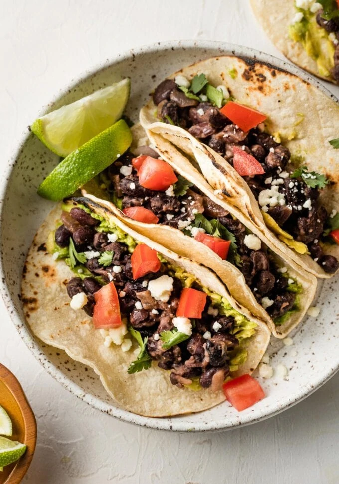

Back To Home
Simple Black Bean Tacos

Canned black beans can be turned into a simple, healthy, but still insanely delicious treat in 10 minutes.
Ingredients
- 1 Can of Black Beans
- 1 can of Diced Green Chilis
- Shredded Cheese Blend
- Spices: Cumin, Salt, Garlic Powder
- Flour Tortilla(s)
- 1 tbsp Butter
Steps
- Open can of black beans and empty into a strainer. Run beans under water and gently toss the beans. You want to remove the bean liquid residue because this is mostly indigestible fiber, the thing that gives you gas.
- Add beans to a large mixing bowl. Smash about half of the black beans to turn them into a paste. You can use a tool for this, but I prefer to just stick my hands in there and squeeze.
- Once your beans are partially smashed, add the diced green chilis and a handful of shredded cheese to the bowl. Mix.
- Season this mixture to your liking. I prefer to add approxiamtely 1 tbsp of cumin, 1 tbsp of garlic powder, and a pinch of salt. Remember, the cheese and beans will already be salty. Be careful not to over season.
- Take your bean mixture and spread it on your flour tortilla. Fold the tortilla in half, pinching from the middle to the outside to evenly distribute the mixture. The beans will act as a sealant for the taco.
- Pre-heat your pan over medium heat. Add the butter to the pan. Cook each taco for approxiately 1 minute on each side, or until the outside of your tortilla is golden brown and crispy.
- This recipe will likely make more than you will use in a single meal. The mixture stores very well in the fridge and the leftovers make for an excellent, nutritious snack with minimal effort.